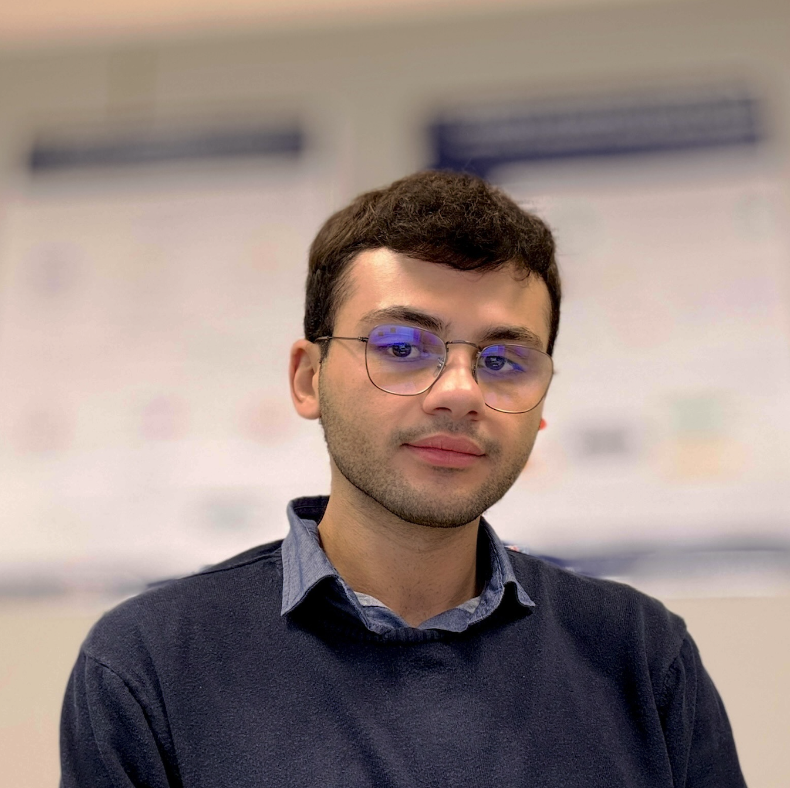

Antonio Curci
PhD Student in Artificial Intelligence for Society

PhD Student in Artificial Intelligence for Society
PhD Student in Artificial Intelligence for Society at the University of Bari in co-affiliation with the University of Pisa. He is part of the Information Visualization and Usability (IVU) Laboratory, tutored by Prof. Rosa Lanzilotti and Prof. Antonio Piccinno at the University of Bari. His main interests are Human-Computer Interaction and its relationship with Artificial Intelligence, along with the ramifications in Project Management, Software Engineering, and Cybersecurity. He is a member of the Italian Research Staff Association (ItalianRSA) since November 2022, the Association for Computing Machinery (ACM) since December 2023, and the ACM Special Interest Group on Computer-Human Interaction (ACM SIGCHI) since March 2024.
Antonio is currently a second-year PhD Student in Artificial Intelligence for Society at the University of Bari, Italy in co-affiliation with the University of Pisa, Italy. His area of research is Symbiotic Artificial Intelligence (SAI), which stands at the intersection between Human-Computer Interaction and AI. He earned his Master's and Bachelor's Degrees at the University of Bari and was an eight-month scholarship researcher throughout his second year as Master's Student.